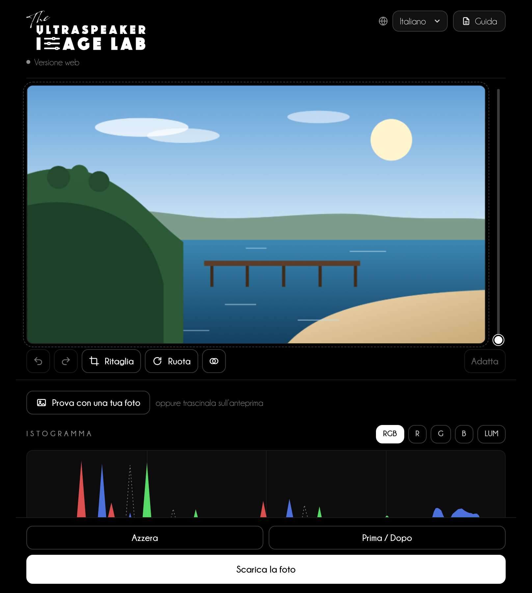
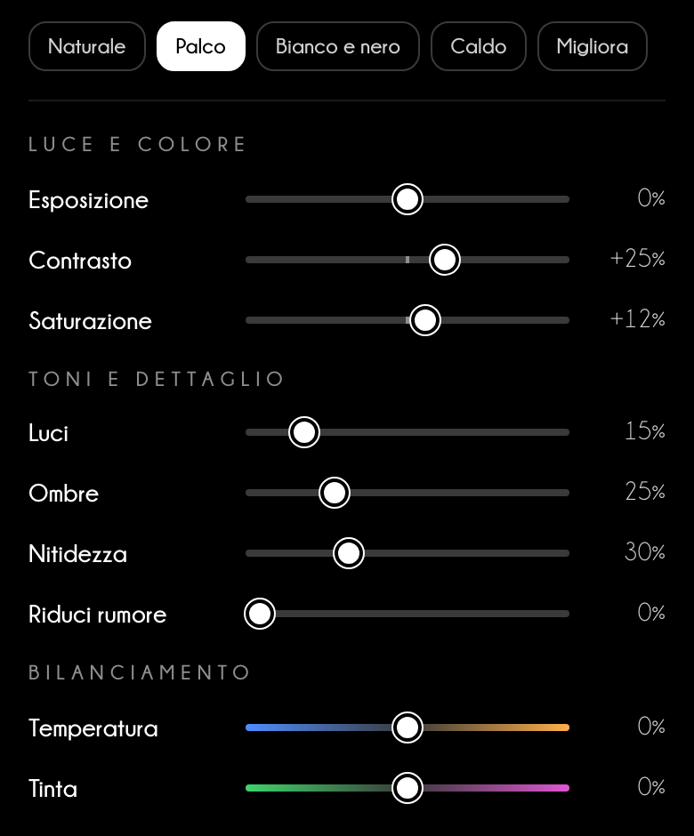
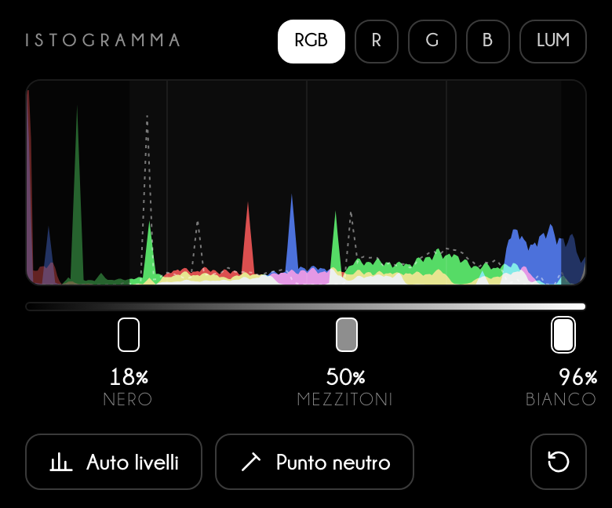
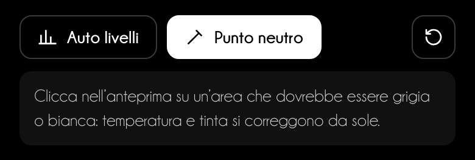
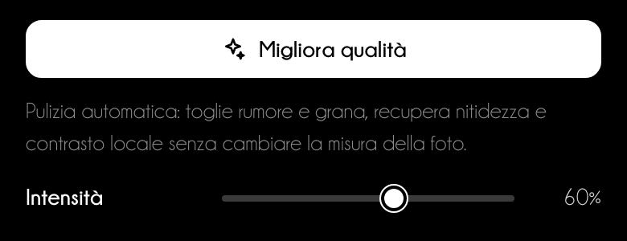
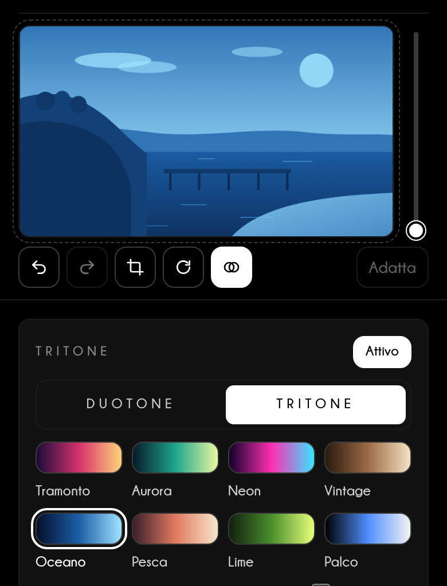
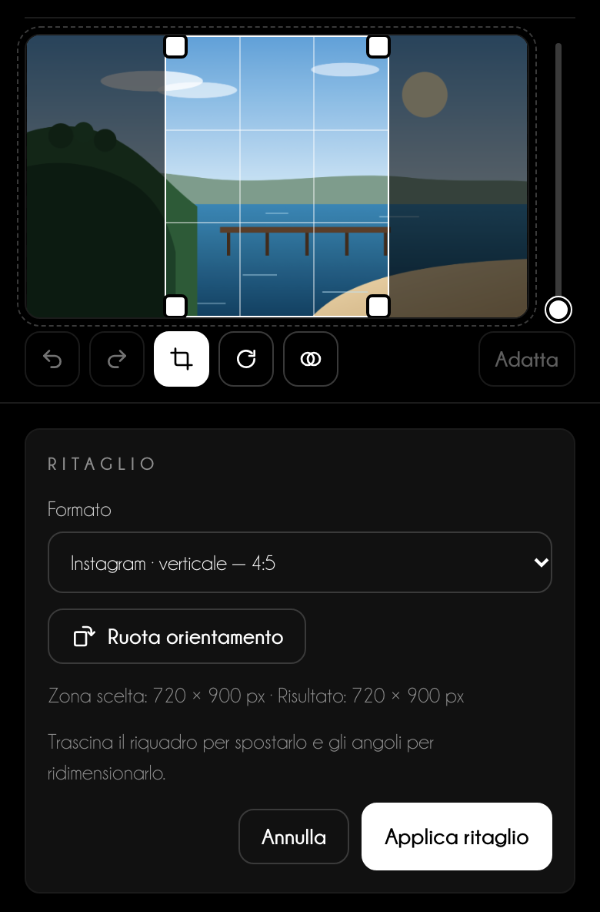
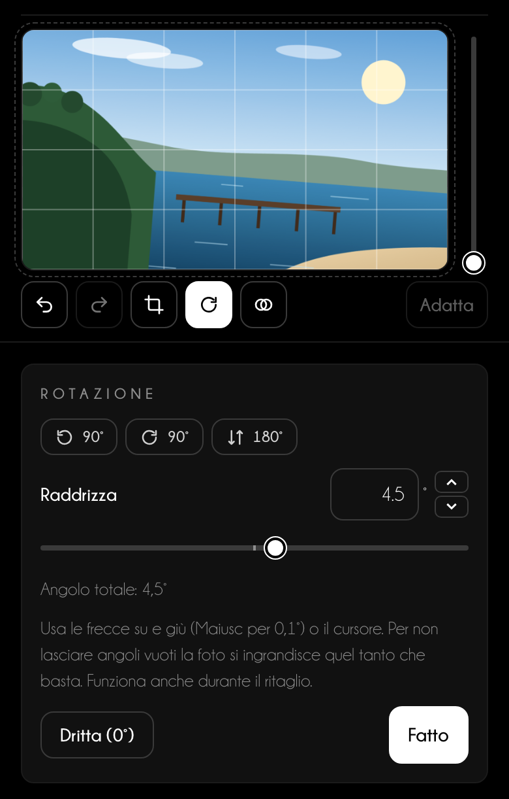
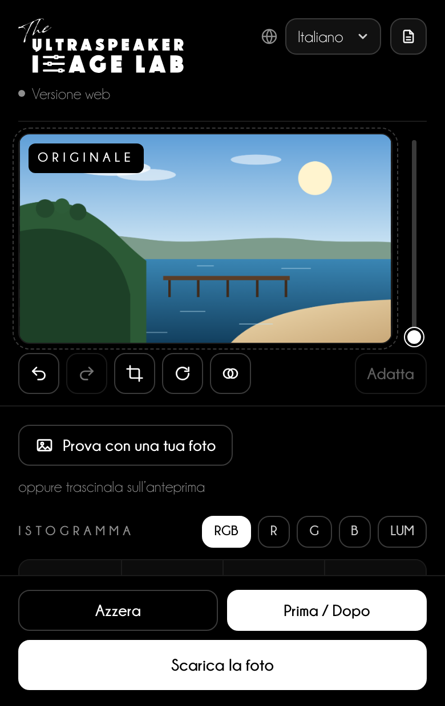
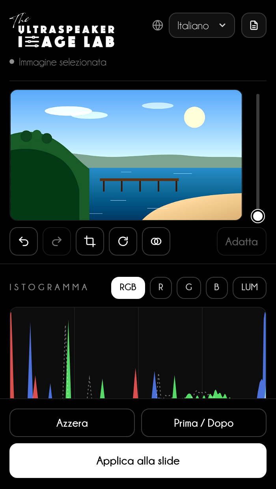

Guida d'utilizzo
Foto chiare e leggibili
in ogni slide
Regola luce, colore, ritaglio e DuoTone delle tue foto nel browser e, presto, direttamente in PowerPoint.
Guida d'utilizzo
Regola luce, colore, ritaglio e DuoTone delle tue foto nel browser e, presto, direttamente in PowerPoint.
Indice
L'Image Lab regola le foto delle tue slide come un programma di fotoritocco: livelli, luce, colore, ritaglio, rotazione e DuoTone, con l'anteprima sempre sotto gli occhi.
Nel browser
Apri niki977.github.io/ultraspeaker-image-lab su computer o telefono. Carichi una foto, la regoli e la scarichi: in JPG, oppure in PNG se ha parti trasparenti.
In PowerPoint
Scheda Home → gruppo The Ultraspeaker → Image Lab. Selezioni una foto nella slide e il pannello la sostituisce con la versione regolata, conservando l'originale.
In arrivo
Il pannello per PowerPoint è in fase di prova e sarà disponibile a breve. Il capitolo 08 lo descrive già per intero.
Privacy
Le foto vengono elaborate sul tuo dispositivo e non vengono mai inviate a un server. Nel browser resta salvata solo la lingua scelta, comune a tutti i Lab The Ultraspeaker.
| Cosa ti serve | Dettagli |
|---|---|
| Versione web | Un browser aggiornato (Chrome, Edge, Safari, Firefox), anche su telefono |
| Pannello di PowerPoint | Microsoft 365: Windows 2601 o successivo, Mac 16.105 o successivo, oppure PowerPoint per il web |
In alto l'anteprima resta ferma mentre scorri le regolazioni; in basso i pulsanti per confrontare e scaricare.

1 2 3 4 5 6 7Parti da uno stile rapido, poi rifinisci con i cursori guardando l'anteprima.

Buono a sapersi
Gli stili rapidi cambiano solo luce e colore: ritaglio, rotazione, «Migliora qualità» e DuoTone restano come li hai impostati.
L'istogramma mostra quanti punti della foto stanno in ogni tono. Le tre maniglie sotto decidono dove inizia il nero, dove sta il grigio medio e dove finisce il bianco.


«Migliora qualità» pulisce le foto fatte con poca luce; Duo & Tri Tone ricolora la foto con i colori della tua presentazione.
Migliora qualità
Fai clic su Migliora qualità: l'Image Lab stima il rumore della foto, lo riduce rispettando i contorni, rende più nitidi i dettagli e aumenta il contrasto locale. Con Intensità scegli quanto spingere; la misura della foto non cambia.


Buono a sapersi
Con il DuoTone la saturazione non serve e sparisce; Temperatura e Tinta diventano «Filtro caldo/freddo» e «Filtro verde/magenta» e spostano la luce tra i colori, come i filtri del bianco e nero.
Ogni formato imposta solo la proporzione: la foto conserva tutti i pixel della zona che scegli.

| Dove va la foto | Formato nel menu | Proporzione |
|---|---|---|
| Slide a tutto schermo | Diapositiva 16:9 | 16:9 |
| Post quadrato | Instagram · post | 1:1 |
| Post verticale | Instagram · verticale | 4:5 |
| Storie, Reel, Stato di WhatsApp | Instagram / Facebook · Storie e Reel | 9:16 |
| Post con link | Facebook · post, LinkedIn · post | 1,91:1 |
| Stampa fotografica | Foto 10 × 15 cm | 2:3 |
Ti serve una misura esatta in pixel o in centimetri? Scegli Dimensioni personalizzate…: è l'unico formato che porta la foto a quella misura.

Prima di scaricare, confronta il risultato con la foto di partenza.

In arrivo
Il pannello per PowerPoint è in fase di prova e sarà disponibile a breve. Nel frattempo usa la versione web e inserisci la foto scaricata nella slide.
Nel pannello le regolazioni sono le stesse della versione web; cambia solo l'ultimo passo: la foto torna nella slide.

1 2 3Un proiettore schiaccia le ombre e spegne i colori: una foto perfetta sul tuo schermo può diventare grigia in sala.
Consiglio da speaker
Per le foto cliniche parti da Palco e controlla l'istogramma: i dettagli importanti non devono stare nel primo né nell'ultimo decimo. Se la sala è luminosa, porta Ombre tra +25% e +40%.
Consiglio da speaker
Usa le stesse regolazioni per tutte le foto di una sequenza, per esempio prima e dopo un trattamento: stesso stile, stessa temperatura, stesso ritaglio. Il pubblico deve notare il risultato clinico, non la luce diversa.
| Uso | Ritaglio | Larghezza minima |
|---|---|---|
| Foto a tutto schermo | Diapositiva 16:9 | 1920 px |
| Foto a metà slide | 3:2 o 4:5 | 1000 px |
| Due foto affiancate (prima / dopo) | stessa proporzione per entrambe | 960 px ciascuna |
Assistenza
Scrivi a info@theultraspeaker.com indicando se usi la versione web o PowerPoint (Mac, Windows o web) e, se puoi, allega uno screenshot.

Knowledge is not enough.
From expert to Ultraspeaker.
theultraspeaker.com · info@theultraspeaker.com